El Sabor Peruano
Nuestra Carta - Sabores auténticos del Perú
En Los Sabores Peruanos, te invitamos a descubrir la esencia de la gastronomía peruana a través de una carta cuidadosamente seleccionada.
Cada plato refleja la riqueza cultural y culinaria de nuestro país, utilizando ingredientes frescos y auténticos para ofrecerte una experiencia única en cada bocado.
Desde el tradicional Ceviche, hasta el irresistible Lomo Saltado y dulces peruanos como el Suspiro a la Limeña,
nuestra carta está diseñada para llevarte en un viaje de sabores que te conectarán con la diversidad y la historia del Perú.
Además, nuestras bebidas, como el clásico Pisco Sour y la refrescante Chicha Morada, complementan a la perfección cada plato.
Explora nuestra carta y déjate seducir por el auténtico sabor del Perú, un homenaje a nuestras raíces y tradiciones.
ENTRADAS
Ceviche Clásico
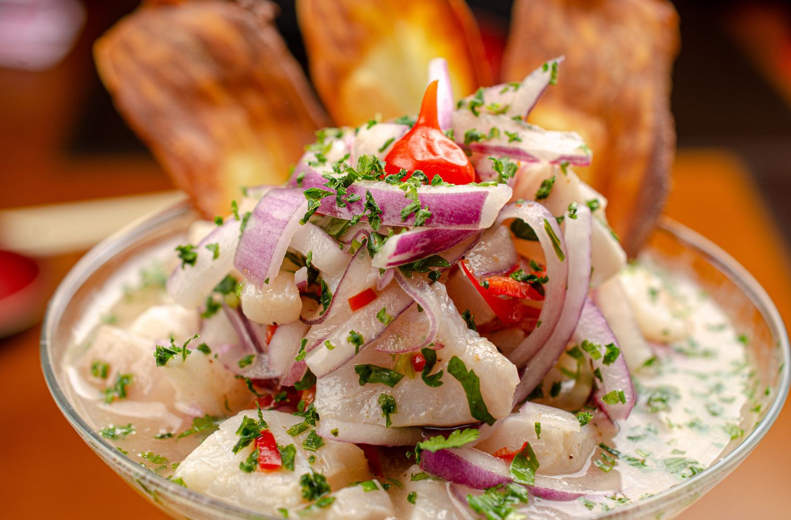Pescado fresco marinado en limón, servido con cebolla morada, camote, choclo y ají.
Causa Limeña
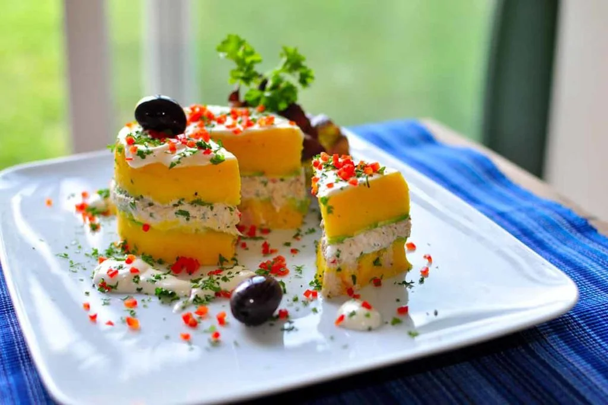Puré de papas amarillo coronado con pollo o atún, palta y ají, acompañado de salsa criolla.
Anticuchos de Corazón
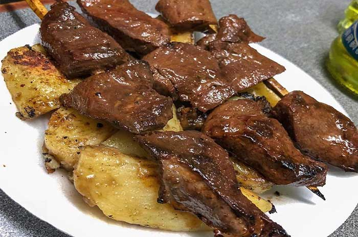Brochetas de corazón de res marinadas en ají panca, servidas con choclo y papas doradas.
Papa a la Huancaína
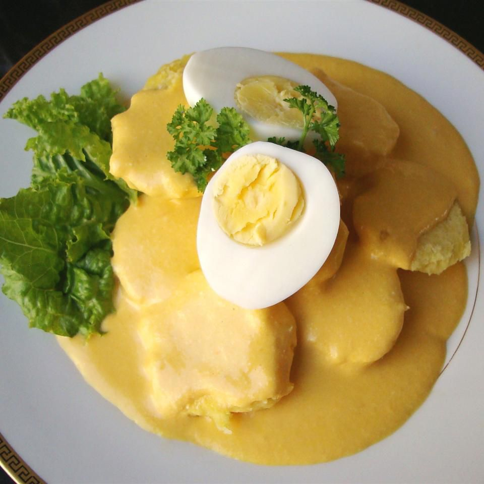Papas sancochadas bañadas en una cremosa salsa de ají amarillo, queso fresco y leche, acompañadas de huevo duro y aceitunas.
PLATOS PRINCIPALES
Lomo Saltado
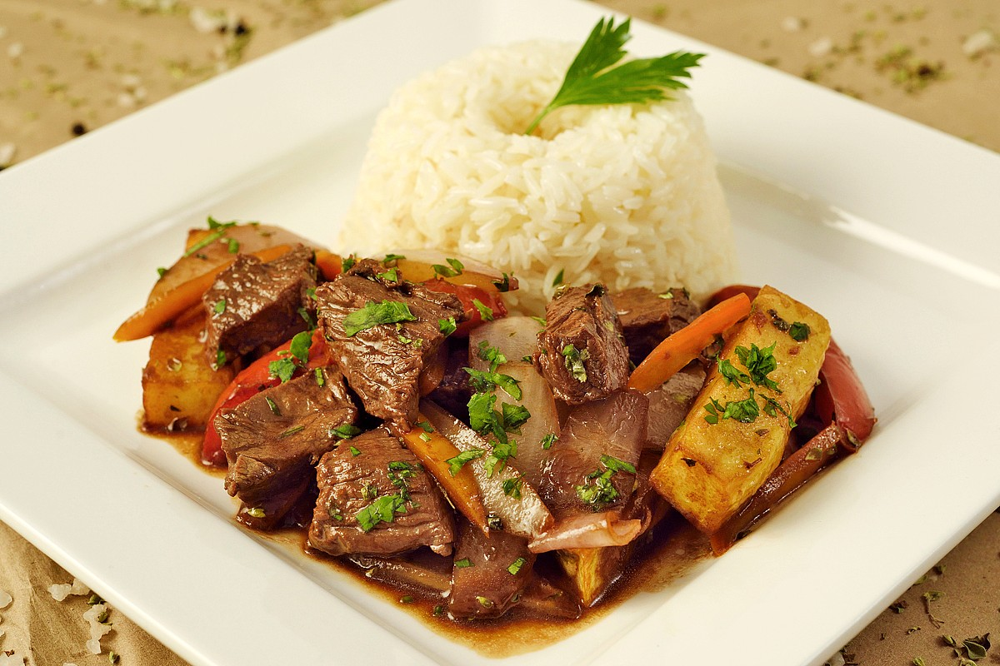Jugosos trozos de carne salteados con cebolla, tomate y ají, servidos con papas fritas y arroz blanco.
Ají de Gallina
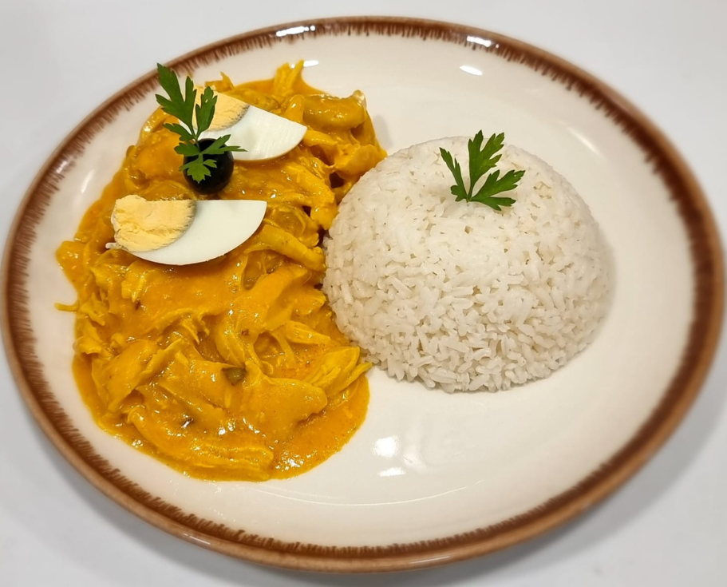Pollo desmenuzado en una suave crema de ají amarillo, leche y nueces, servido con papas sancochadas y arroz.
Seco de Cordero
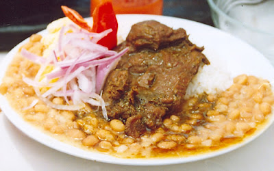Estofado de cordero cocido en una rica salsa de cilantro, acompañado de arroz y frijoles.
Arroz con Mariscos
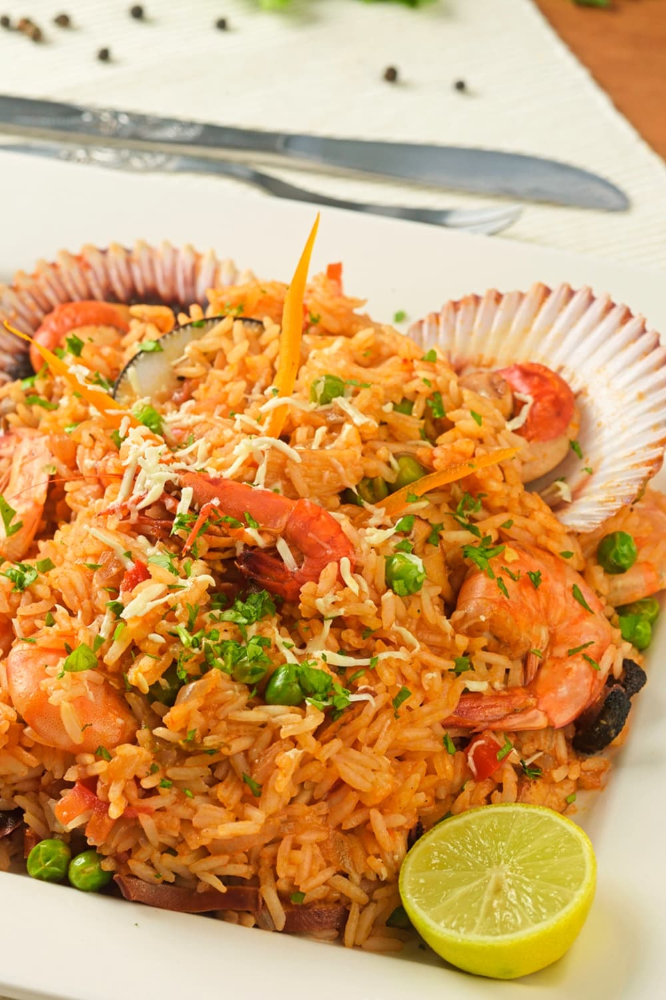Lima
Arroz sazonado con ajíes y hierbas, mezclado con mariscos frescos en una combinación perfecta de sabores marinos.
Tallarines Verdes con Bistec
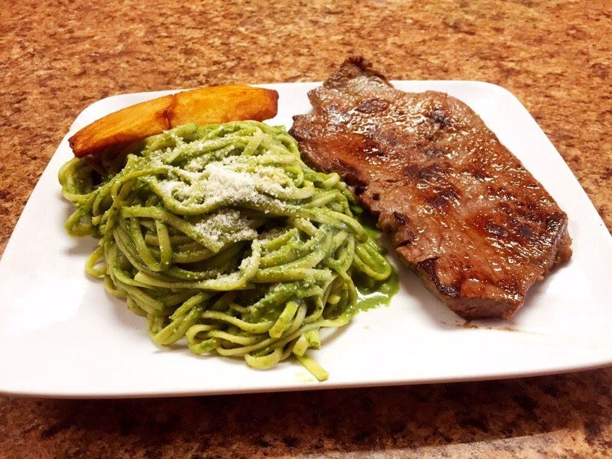Fideos bañados en una salsa de albahaca, espinaca y queso, acompañados con bistec a la parrilla.
POSTRES
Suspiro a la Limeña
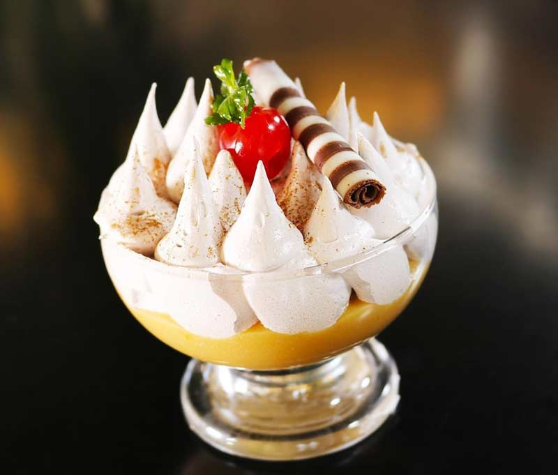Postre cremoso hecho de manjar blanco y merengue de vino, con un toque de canela.
Picarones
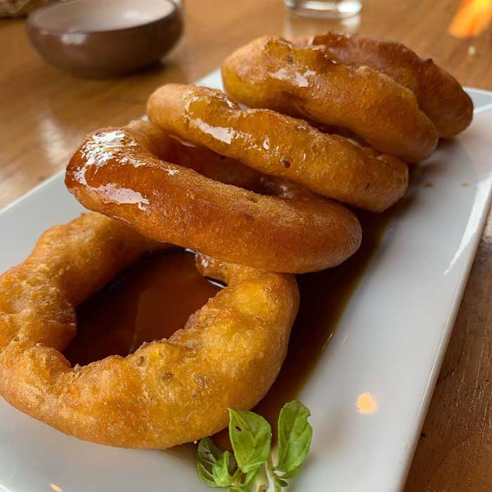Deliciosas rosquillas de masa de camote y zapallo, fritas y bañadas en miel de chancaca.
Mazamorra Morada
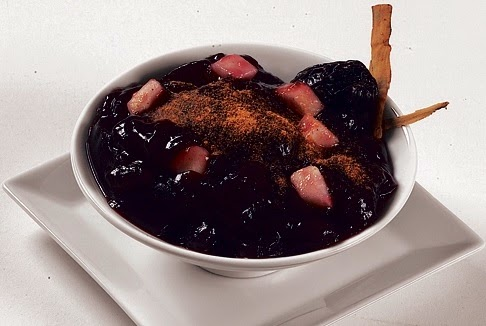Postre hecho a base de maíz morado, con frutas secas y especias, servido caliente.
BEBIDAS
Pisco Sour
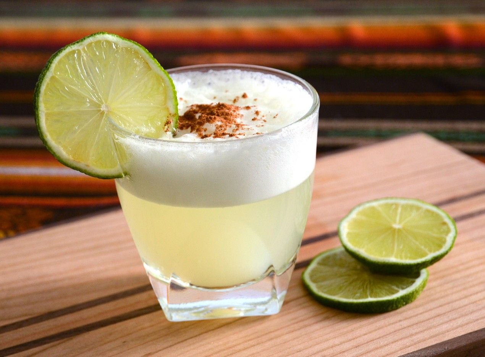El coctel nacional del Perú, una mezcla de pisco, limón, azúcar y clara de huevo, con un toque de amargo de angostura.
Chicha Morada
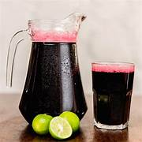Bebida refrescante a base de maíz morado, con un toque de piña, canela y clavo.